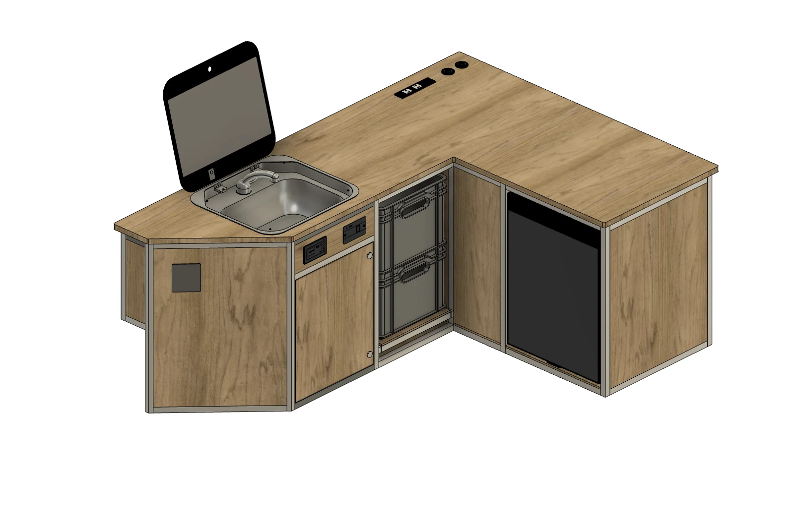
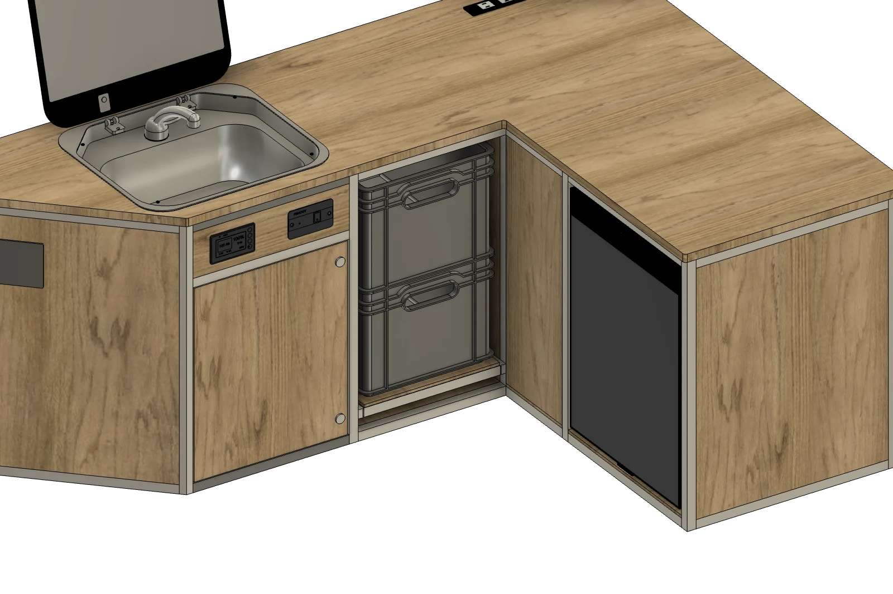
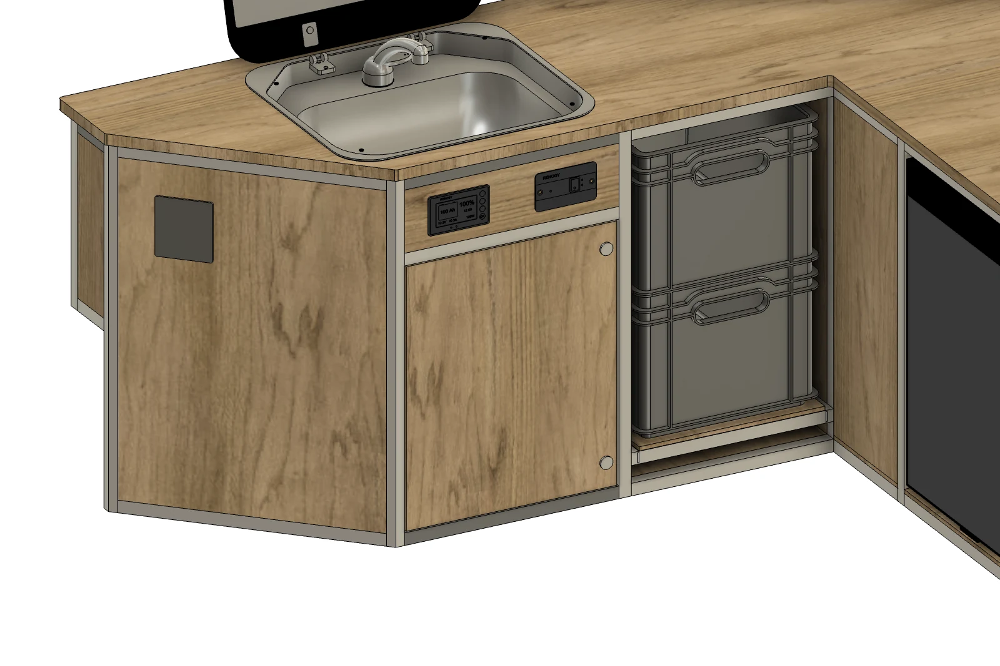
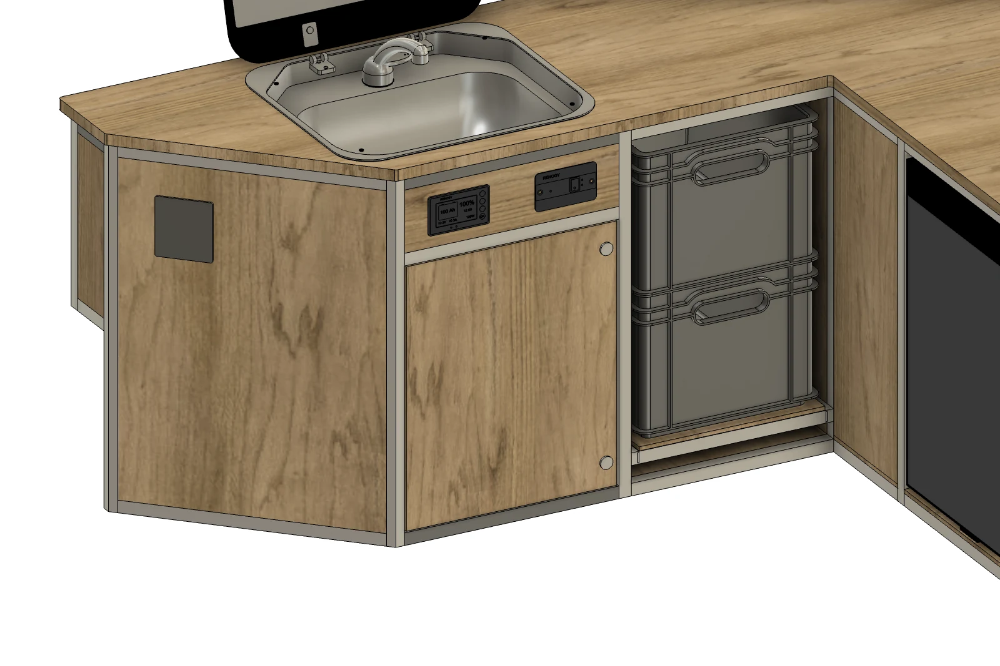
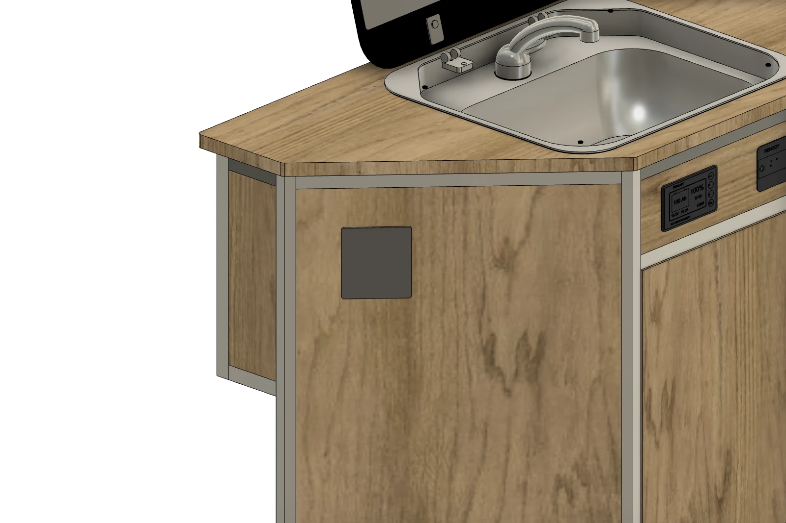
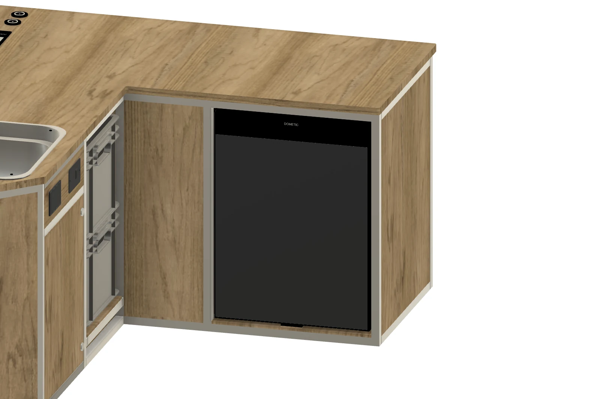
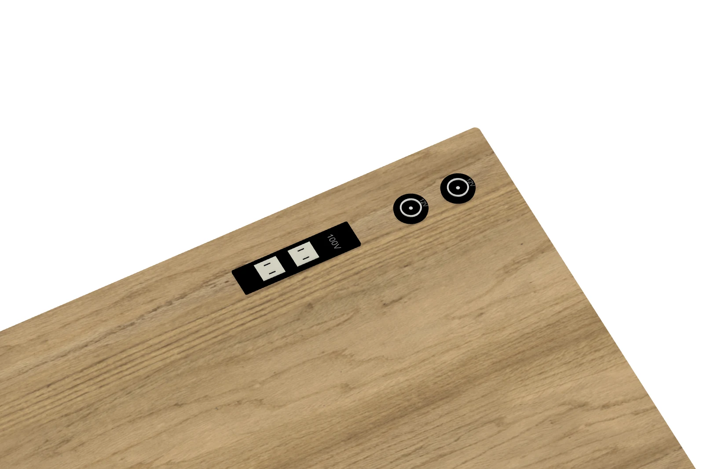
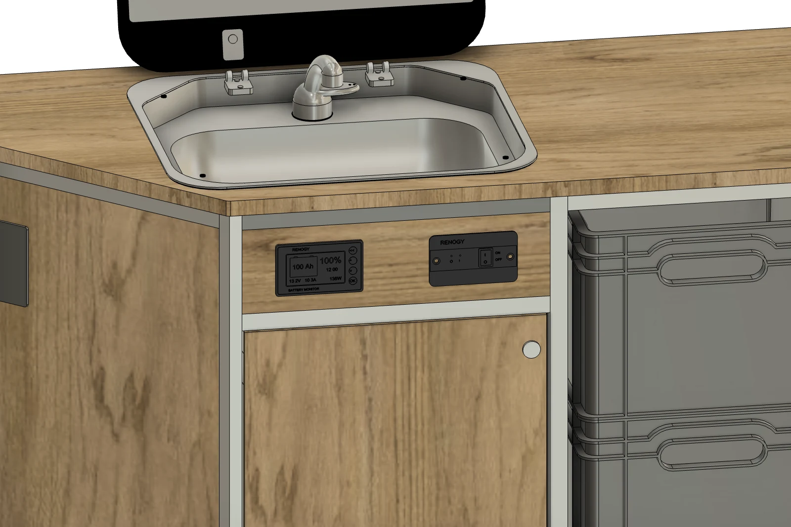

モジュール一覧 / フロントモジュールMODULE 02 / 11
Front module
ALUMINUMフロントモジュール
収納、水まわり、電源をひとつに。
35L冷蔵庫・シンク・シャワーをまとめた、アルミフレームのフロントモジュールです。引き出せるユーロコンテナとシンク下のウォータータンク収納、100V・12Vの電源を備え、最大300Ahのサブバッテリーシステムの設置にも対応します。
Front module

バーチ合板01
冷蔵・水まわり35L冷蔵庫・シンク・シャワー
02
引き出す収納2段のユーロコンテナと、扉から使えるタンク収納
03
電源をまとめる100V／12V電源と、最大300Ahのサブバッテリー対応
SLIDE STORAGE / EUROCONTAINERS
引き出すと、道具に手が届く。
2段のユーロコンテナを載せたトレーが手前へスライド。収納時と引き出した状態を、同じ角度から比較できます。


WATER STORAGE / UNDER THE SINK
シンク下の扉から、タンクへ。
ウォータータンクはシンク下へ。給水用と排水用の2個を収めた配置イメージです。


WATER & COOLING
シンク、シャワー、35Lの冷蔵庫。
水まわりと冷蔵設備を、ひとつのフロントキッチンにまとめています。


POWER / UP TO 300Ah
使い方に合わせた電装を。
100V・12Vの電源を備え、最大300Ahのサブバッテリーシステムの設置にも対応。正面には操作用スイッチとバッテリーモニターをまとめています。


DETAILS
モジュールの内容
- 合板の仕上げ
- ヘキサ合板（ブラック）／バーチ合板
- 合板の小口
- どちらの仕様も木の色・木目
- フレーム
- アルミフレーム
- 天板
- ALBERO（アルベロ）合板・厚さ18mm
- コンテナ収納
- ユーロコンテナ2段・スライド引き出し
- シンク下
- 扉付きウォータータンク収納
- 水まわり
- Dometicシンク・蛇口・シャワー
- 冷蔵庫
- Dometic 35L
- コンセント
- 100Vコンセント／12Vソケット
- 電装対応
- 最大300Ahのサブバッテリーシステムを設置可能
- 操作・確認
- 正面のスイッチ・バッテリーモニター